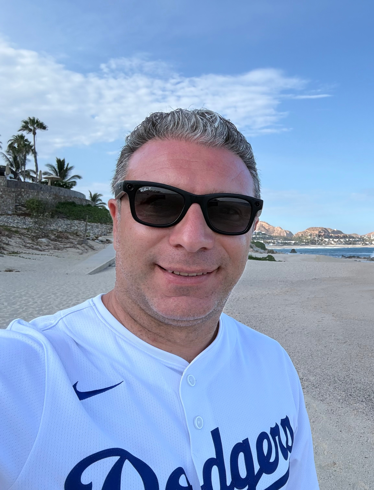

Ro Cammarota
Associate Professor of Computer Science
University of California, Irvine
Director, Confidential Intelligence Lab
From Security Research to Computing Infrastructure
I am a computer scientist working at the intersection of cryptography, computer systems, artificial intelligence, and hardware. Throughout my career, I have been interested in a recurring question: how do we turn strong ideas about security and privacy into computing technologies that can operate at meaningful scale?
That question has taken me across the computing stack—from physical and side-channel security, cryptographic hardware, protocols, and system security architecture to privacy-preserving AI, post-quantum cryptography, encrypted computation, and specialized architectures. The common thread is the belief that security and privacy should not be afterthoughts; they should be properties around which computing systems are designed.
From Ideas to Impact
Much of my career has taken place where research meets engineering. At Qualcomm, I worked across product security, cryptographic implementations, system architecture, AI accelerators, and industry standards. That experience reinforced that successful security technologies must ultimately address performance, power, interoperability, product requirements, legacy systems, and deployment at scale.
At Intel, I increasingly focused on privacy-enhancing technologies and ultimately founded and led the Encrypted Computing program. As Principal Investigator of DARPA DPRIVE, I led a large cross-organizational effort culminating in HERACLES, a programmable hardware and software platform for high-performance Fully Homomorphic Encryption. In parallel, we developed open-source software, built research collaborations, and advanced international FHE standardization.
These experiences shaped how I approach research today. Important results begin with ideas, but transformative technologies often require much more: artifacts, software, hardware, standards, communities, and sustained engineering.
Back to Academia
I returned to UC Irvine, where I received my M.S. and Ph.D. in Computer Science, to build the next phase of this research agenda. I am now an Associate Professor of Computer Science and Director of the Confidential Intelligence Lab .
The timing is consequential. Artificial intelligence is changing how information is created and processed, while quantum technologies are forcing a generational transition in cryptographic infrastructure. At the same time, increasingly capable adversaries challenge assumptions about the software, hardware, and physical systems on which computation depends.
My current research brings these changes together through post-quantum migration and cryptographic agility, privacy-enhancing technologies and encrypted computation, computational paradigms for confidential intelligence, physical security of AI systems, and resilient computing. The goal is to move from ideas to artifacts, artifacts to systems, and systems to broadly useful infrastructure.
How I Work
I tend to work across boundaries: theory and implementation, software and silicon, academia and industry, research and standardization. I value ambitious technical questions, but also working systems, reproducible evidence, open artifacts, and clear paths toward real-world impact.
Collaboration is central to this process. Many important problems in security and privacy are too large for one discipline or organization. They require researchers, engineers, students, industry, government, and standards communities to understand one another well enough to build something together.
The same philosophy shapes how I work with students: developing deep technical expertise while learning to see the larger system around a research problem—why it matters, what assumptions it depends on, how an idea can be validated, and what it would take for others to use it.
Looking Forward
I believe the convergence of AI, advanced cryptography, and emerging computing technologies creates an unusual opportunity to rethink the foundations of secure computing.
That is the environment I want the Confidential Intelligence Lab to inhabit: a place where foundational ideas become open research artifacts, students grow into independent technical leaders, and collaborations across academia, industry, government, and the broader technology ecosystem turn promising research into meaningful impact.
I welcome conversations with students who want to work on difficult problems, researchers and professionals who see opportunities to build together, and organizations exploring how emerging security and privacy technologies may shape future systems and products.
Professional Record
I am a Senior Member of both the IEEE and ACM. A broader record of my research, technology leadership, standards activities, and professional experience is available through my LinkedIn profile . My scholarly record is available through DBLP and Google Scholar , while my published inventions are available through Justia Patents . Selected work is highlighted on my publications page . A detailed curriculum vitae is available upon request.